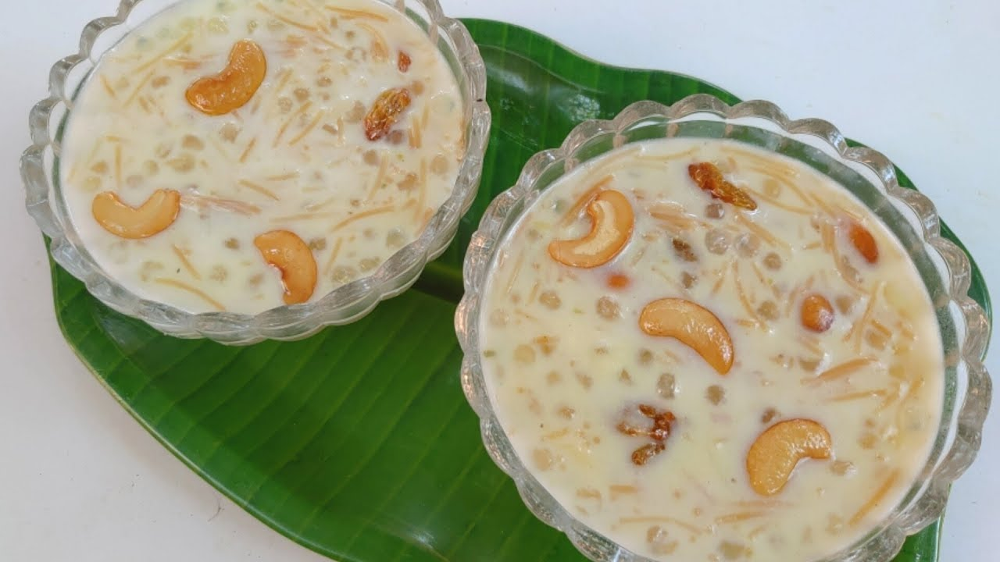

South Indian Recipes
South Indian RecipesBreakfast
Rice items
Sambars and Curry
Sweets
Snacks
 Shavige Payasa, also known as Vermicelli Kheer, is a traditional South Indian sweet dish that holds a special place in the region's culinary heritage. Originating from Karnataka and other southern states of India, Shavige Payasa has a history deeply rooted in the rich cultural tapestry of the region. The dish is typically prepared during festivals, special occasions, and religious ceremonies, making it a symbol of celebration and togetherness. Its roots can be traced back to ancient Indian culinary traditions, where the use of ingredients like vermicelli, milk, ghee, sugar, and nuts was prevalent. Shavige, the main ingredient, is a type of thin rice or wheat noodles that forms the base of the dish. The vermicelli is first roasted in ghee, imparting a delightful aroma and nutty flavor to the dish. Then, it is simmered in milk until it achieves a creamy consistency. The addition of sugar sweetens the mixture, and aromatic spices like cardamom are often used to enhance the flavor profile. To further enrich the texture and taste, Shavige Payasa is adorned with a generous amount of chopped nuts, such as almonds and cashews, providing a delightful crunch with every spoonful. Some variations may include the use of saffron or raisins, adding a touch of luxury to this beloved South Indian dessert. The unique blend of sweet, nutty, and aromatic flavors makes Shavige Payasa a favorite among those with a sweet tooth. Whether served hot or cold, this traditional South Indian sweet dish continues to be a cherished part of festive feasts, bringing joy and sweetness to the hearts and palates of those who indulge in its time-honored goodness.
Shavige Payasa, also known as Vermicelli Kheer, is a traditional South Indian sweet dish that holds a special place in the region's culinary heritage. Originating from Karnataka and other southern states of India, Shavige Payasa has a history deeply rooted in the rich cultural tapestry of the region. The dish is typically prepared during festivals, special occasions, and religious ceremonies, making it a symbol of celebration and togetherness. Its roots can be traced back to ancient Indian culinary traditions, where the use of ingredients like vermicelli, milk, ghee, sugar, and nuts was prevalent. Shavige, the main ingredient, is a type of thin rice or wheat noodles that forms the base of the dish. The vermicelli is first roasted in ghee, imparting a delightful aroma and nutty flavor to the dish. Then, it is simmered in milk until it achieves a creamy consistency. The addition of sugar sweetens the mixture, and aromatic spices like cardamom are often used to enhance the flavor profile. To further enrich the texture and taste, Shavige Payasa is adorned with a generous amount of chopped nuts, such as almonds and cashews, providing a delightful crunch with every spoonful. Some variations may include the use of saffron or raisins, adding a touch of luxury to this beloved South Indian dessert. The unique blend of sweet, nutty, and aromatic flavors makes Shavige Payasa a favorite among those with a sweet tooth. Whether served hot or cold, this traditional South Indian sweet dish continues to be a cherished part of festive feasts, bringing joy and sweetness to the hearts and palates of those who indulge in its time-honored goodness.
